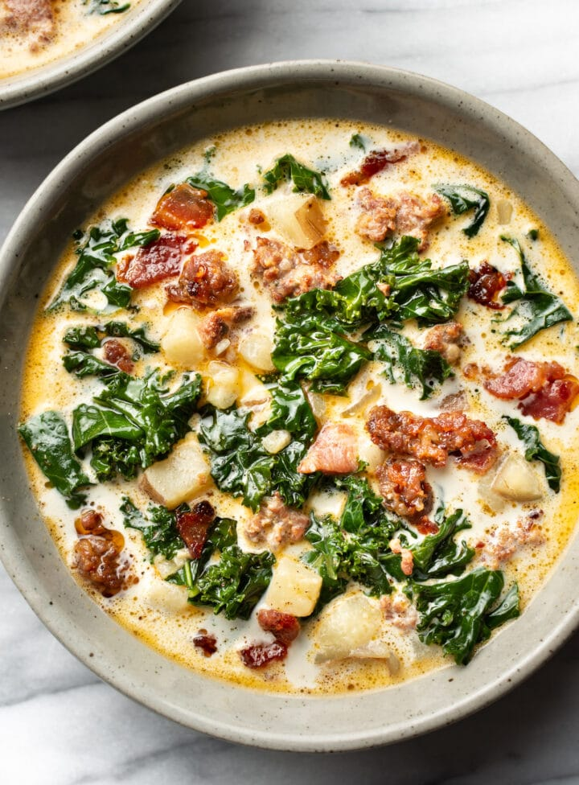

Copy-cat Zuppa Toscana (Olive Garden Potato Soup)

Zuppa Toscana Soup
Zuppa Toscana is oh-so-good! This recipe has just the right amount of spice to keep you coming back
for more! Hearty, flavorful, and delicious - not to mention identical to a popular menu item at a certain chain restaurant!
What's in Zuppa Toscana
- Meat: This meaty zuppa toscana soup calls for both mild italian sausage and bacon.
- Spices: Crushed red pepper flakes and fresh garlic lend bold, spicy flavor.
- Vegetables: You'll need an onion, six potatoes, and fresh kale.
- Broth: Use store-bought or homemade chicken broth.
- Cream: A cupt of heavy cream is essentail for this rich, decadent soup.
How to make Zuppa Toscana
You'll find the full step-by-step recipe below - but here's a brief overivew of what you can expect when you make homemade
zuppa toscana:
- Cook the Italian sausage with the red pepper flakes.
- Cook the bacon, then cook the onion and garlic in the bacon drippings.
- Add the broth and bring to a boil, then add the potatoes and simmer.
- Reduce the heat and stir in the cream, cooked sausage and spinach.